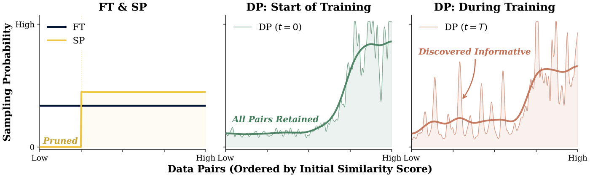
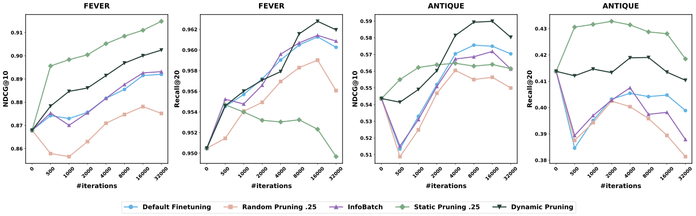

目录 · 10 节
1它到底在解决什么问题？2先看全景3静态剪枝：排序涨了，召回掉了4动态剪枝：两级采样，概率随训练变化5实验：平均提升不大，但两个指标都没有掉6消融：每个部件都有用，单拿出来都不够7带噪声标注时：先静态再动态8我认为它的局限9一个检索或召回团队可以怎么试10一句话结论和评价分享 SHARE
做稠密检索或 embedding 模型领域微调的团队值得读。它的价值不在提分幅度，而在讲清了一个容易踩的坑：按相似度删掉“差”的训练对，排序指标会涨，召回却会掉，原因出在检索训练“先抽 query、再抽文档”的两级采样上。核心思想一句话：不删数据，只调采样概率，在 query 和文档两级上让高分样本多被抽到，低分样本少被抽到但不为零，而且越到训练后期越偏向高分样本。在 bge-large-en-v1.5 和 8 个数据集上，动态剪枝（DP）的平均 NDCG@10 从标准微调的 0.535 到 0.545，平均 Recall@20 从 0.530 到 0.534；在 FEVER（事实核查数据集）上用不到一半的迭代就追平标准微调。我认为它的提升幅度不大，又没有报告多次随机种子的方差，所以更适合当成一个低成本、可以直接加进采样器的改动来试，而不是期待大幅涨点。
它到底在解决什么问题？
稠密检索模型的微调通常这样采样：先从全部 query 里均匀抽一个，再从它的若干个正样本文档里随机抽一个，再用难负样本挖掘（从检索结果里挑排得靠前但不相关的文档）配一个负样本，算对比损失。这里有两级：query 一级，文档一级。
一个直接的想法是数据剪枝：用预训练模型算每个“query–正样本文档”对的余弦相似度，只留最像的那部分。问题出在 query 一级。用一个示意例子看：
| query | 正样本对的相似度（示意） | 保留最高的一半后 |
|---|---|---|
| A | 0.9、0.85、0.8、0.75 | 4 对全留 |
| B | 0.6、0.5、0.45 | 全删 |
| C | 0.4 | 全删 |
8 对里留 4 对，B 和 C 两个 query 整个消失了。剪枝后论文的采样公式改成：query 被抽到的概率等于它留下的正样本对数除以全部留下的对数，等价于在所有留下的对里均匀抽。所以留下的对越多的 query 越常被抽到，这里 A 从原来的三分之一变成百分之百。模型只见过“好匹配”的 query，排序更准，但遇到 B、C 这类不好匹配的 query 就召回不到。论文把这叫作质量和覆盖的权衡，并强调它来自检索特有的两级采样，分类任务里逐样本剪枝不会有这个问题。
这里的两个指标：NDCG@10 看前 10 个结果排得好不好，相关的越靠前越高；Recall@20 看所有相关文档里有多少进了前 20，衡量覆盖。
先看全景

| 方法 | 打分来源 | 何时打分 | 低分样本 |
|---|---|---|---|
| 标准微调（FT） | 不打分 | — | 正常抽 |
| 静态剪枝（SP） | 预训练模型的余弦相似度 | 训练前一次 | 删掉 |
| 动态剪枝（DP） | 当前模型前向时顺手算出的分数 | 训练中持续更新 | 少抽但不为零 |
论文先做 SP，证实了上面的权衡；再提出 DP 来解决它。
静态剪枝：排序涨了，召回掉了
SP 的做法很简单：用预训练模型给所有正样本对打余弦相似度，留下最高的 k 比例，默认 k=0.25，也就是删掉四分之三。某个 query 的正样本对全被删时，这个 query 也就不再出现。
结果完全符合上面的分析。SP 在 NFCorpus、TriviaQA、FEVER 上拿到了最高的 NDCG@10（分别是 0.491、0.501、0.915），8 个数据集平均 0.537，略高于 FT 的 0.535；但平均 Recall@20 从 FT 的 0.530 掉到 0.512，在 HotpotQA 上从 0.836 掉到 0.781。这说明删数据确实让模型更会排序，但代价是覆盖面变窄。
在 NFCorpus 上改变 k 的实验更能说明问题：即使只留 5% 的数据，NDCG@10 仍有 0.482，高于 FT 的 0.466；而 Recall@20 随着 k 变小一路下降。少量高相似度的数据就足够教会排序，召回却需要见过足够多样的 query。
论文也试过另一种打分方法 CBS（一致性打分）：用预训练模型把每个正样本文档和 1 万个随机文档（取自其他 query 的正样本）一起按相似度排序，用正样本排名的倒数作为分数，排名越靠前分数越高，再按比例保留。它和余弦相似度效果接近：4 个数据集上平均 NDCG@10 是 0.612 对 0.620，平均 Recall@20 是 0.576 对 0.566，各有胜负。但 CBS 每次模型更新后都要把负样本重新编码一遍，没法用在训练中持续打分的 DP 上，所以最后统一用余弦相似度。
动态剪枝：两级采样，概率随训练变化
DP 不删任何数据，只改两级的采样概率。打分不需要额外的前向计算：每一步训练本来就要算 query 和正样本的 embedding，顺手就能得到两个分数。一个是正样本分数，即 query 和正样本文档的余弦相似度；另一个是 query 分数，取这个 query 所有正样本对的平均对比损失，再加一个偏移保证为正。按我的理解，每个正样本对的分数存在一张表里，某一对被抽进 batch 时就用这一步的结果刷新它，没被抽到的沿用上次的值；每隔若干步再把表里同一个 query 的各对汇总成 query 分数、重新算门槛。论文提到的额外开销正是这一步的汇总和分位数计算，所以不需要额外的前向计算。
文档一级的做法是：把全部正样本分数从高到低排，取前 v 比例处的分数作为门槛 T。高于门槛的文档权重是 β，其余是 1，归一化后按权重抽。论文的设置是 β=5，v 从 0.25 随训练放宽到 0.5。手算一个示意：某个 query 有 4 个正样本，只有 1 个高于门槛，权重是 5、1、1、1，所以这个文档被抽中的概率是 5/8，其余三个各 1/8。差的文档少抽了，但一次也不会被完全排除。
query 一级要复杂一些，做法是维护一个大小固定为 n₀ 的虚拟池：按 query 分数排在前 r 比例的 query 一定进池，剩下的名额从其余 query 里随机抽。r 的取法保证“前排 query 进池的概率”和“其余 query 进池的概率”之比恰好等于采样强度 α。
下面用一个示意数据手算一遍。设有 n=100 个 query，论文的初始截断比例 r_s=0.25、初始强度 α_s=2，于是 n₀=⌊100×0.75÷2+25⌋=62。训练开始时 α=2，r=(2×62−100)÷(1×100)=0.24：前 24 个 query 必进池，剩下 38 个名额从 76 个 query 里随机抽，每个进池的概率是 0.5，两者之比正好是 2。训练结束时 α=5，r=(5×62−100)÷(4×100)=0.525：前约 52 个必进池，剩下约 9.5 个名额从约 47.5 个里抽，概率 0.2，比值是 5。池的大小始终是 62，所以每个 epoch 的步数不变，能直接塞进要求数据集大小固定的训练框架。 Hoot 说

正文算过的两端：α=2 → α=5
- r（必进的比例）
- 0.24 → 0.525
- 必进池的 query
- 24 → 约 52.5 个
- 剩余名额 ÷ 其余 query
- 38 ÷ 76 → 9.5 ÷ 47.5
- 其余进池概率
- 0.5 → 0.2
概率怎么来：排名靠前的 24 个必进（概率 1）；剩下 38 个名额在 76 个其余 query 里等概率抽，每个 38 ÷ 76 = 0.5。r 就是按“前排概率 ÷ 其余概率 = α”反解出来的，所以比值 1 ÷ 0.5 = 2、1 ÷ 0.2 = 5，正好是 α。
补算中间点：训练一半 α=3.5
- r=(3.5×62−100)÷250
- 0.468
- 必进池的 query
- 约 46.8 个
- 剩余名额 ÷ 其余 query
- 15.2 ÷ 53.2
- 其余进池概率
- ≈0.286
1 ÷ 0.286 ≈ 3.5。名额总数始终 62，每个 epoch 步数不变。
n=100 个 query、n₀=62，数字示意；右栏（训练一半，α=3.5）是按同一公式补算的，正文没有。46.8、52.5 这类小数人数是连续近似；实际取整后，两类概率之比只近似等于 α。 出处: 论文 §3：n₀=⌊n(1−r_s)/α_s + r_s·n⌋，r=(α·n₀−n)/((α−1)·n)；r_s=0.25，α 从 2 到 5（余弦）
采样强度会随训练变化：α 按余弦曲线从 2 变到 5，训练到一半时是 3.5。直觉是：刚开始模型给出的分数还不可信，选得太狠只会放大噪声，所以先抽得比较均匀；模型变好以后，分数更可信，再逐渐偏向高分样本。这和课程学习先易后难、逐步放宽的方向正好相反，DP 是先宽后严。
为了省开销，query 分数不必每步都重算，每隔 I_u 步更新一次。在 FiQA 上，每步更新让训练速度慢 4.49%，每 10 步更新慢 2.51%，每 100 步更新只慢 1.64%。在更大的 FEVER（14 万个正样本对）上，每步更新的开销涨到 17.4%，每 10 步更新降到 2.82%。所以实际用时取 I_u=10 左右就够了。

实验：平均提升不大，但两个指标都没有掉
主实验用 bge-large-en-v1.5（3.35 亿参数），8 个英文数据集覆盖营养、医疗、金融、非事实问答、事实问答和事实核查。所有超参数都按 FT 调到最好，其他方法直接沿用，不再单独调。对比对象里的 InfoBatch 是一种通用的动态剪枝方法：随机跳过损失低于平均值的样本，再放大剩下样本的梯度来补偿。
| 方法 | 平均 NDCG@10 | 平均 Recall@20 | NDCG 平均排名 | Recall 平均排名 |
|---|---|---|---|---|
| 预训练模型 | 0.507 | 0.495 | 4.75 | 4.38 |
| FT | 0.535 | 0.530 | 3.38 | 2.75 |
| InfoBatch | 0.535 | 0.530 | 2.88 | 2.38 |
| SP | 0.537 | 0.512 | 2.63 | 3.88 |
| DP | 0.545 | 0.534 | 1.38 | 1.63 |
DP 在 8 个数据集里有 6 个 NDCG@10 最高、5 个 Recall@20 最高。这说明它确实在不损失召回的前提下拿到了排序收益。但要注意幅度：平均 NDCG@10 高 0.010，平均 Recall@20 只高 0.004。InfoBatch 和 FT 的平均值完全一样，说明通用的逐样本剪枝在这里没有帮助。
训练效率上，FEVER 上 FT 和 InfoBatch 要 16000 步才达到最好的 NDCG@10，DP 不到 8000 步就追平，SP 不到 500 步就到这个水平。把 DP 每步 2.82% 的额外开销算进去，总训练时间省约 49%。
换成 Qwen3-Embedding-0.6B（基于大语言模型的 embedding 模型）时，只跑了 3 个数据集、2000 步。SP 的平均 NDCG@10 最高（0.507），DP 是 0.501，FT 是 0.488；DP 的平均 Recall@20 最高（0.375），FT 是 0.372，SP 掉到 0.361。这说明权衡的模式和 BGE 上一致；DP 在步数少的设置下优势变小，是因为它需要时间调整采样。
消融：每个部件都有用，单拿出来都不够
| 变体（FEVER） | NDCG@10 | Recall@20 |
|---|---|---|
| FT | 0.892 | 0.960 |
| SP（三个部件都没有） | 0.915 | 0.950 |
| DP 改成硬截断 | 0.908 | 0.957 |
| DP 固定强度（α=4、β=5、v=0.25） | 0.900 | 0.952 |
| 完整 DP | 0.902 | 0.962 |
这张表说明：把“少抽”改成“不抽”，NDCG 更高但召回跌到 FT 以下；去掉余弦调度、用固定强度，召回也跌到 FT 以下。只有完整 DP 两个指标都高于 FT。在 FiQA 上拆两级也是同样的结论：只做 query 级，NDCG@10 是 0.517；只做文档级是 0.516；两级都做是 0.524，FT 是 0.514。
调度方向的实验也有意思。在 NFCorpus 上把 α 反过来从 5 降到 2（课程学习的方向），NDCG@10 是 0.476、Recall@20 是 0.310；默认方向是 0.480 和 0.304，FT 是 0.466 和 0.300。两个方向都比 FT 好，说明方向不是关键，它本身成了在排序和召回之间取舍的一个旋钮。
按难度分组的结果回应了“是不是只在简单 query 上涨分”的疑问。FiQA 的 648 个测试 query 按预训练模型的相似度分成难、中、易三组，各 216 个。难的那组 NDCG@10：FT 0.209、SP 0.203、DP 0.212。这说明 SP 在难 query 上会退步，DP 不会。
带噪声标注时：先静态再动态
ANTIQUE 的标注分 4 级，第 2 级是“没有回答问题”，占训练数据的 23.1%。论文故意把第 2 级也当正样本训练，测试时仍只把第 3、4 级当相关，所以训练集里大约每 4 个正样本就有 1 个是错的，用来模拟标注有噪声的情况。
| 方法 | NDCG@10 | Recall@20 |
|---|---|---|
| 预训练模型 | 0.543 | 0.414 |
| FT | 0.570 | 0.395 |
| SP（k=0.25） | 0.560 | 0.430 |
| DP | 0.587 | 0.411 |
| SP（k=0.75）后接 DP | 0.582 | 0.422 |
FT 的 Recall@20 反而比没微调的预训练模型还低，说明错误的正样本对召回的伤害比对排序大。SP 删掉低相似度的对，等于删掉了大部分噪声，召回最高；DP 排序最好。先用 SP 删掉最低的 25%，再在剩下的数据上跑 DP，两个指标都高于 FT 和预训练模型。论文的理论分析也给出同样的建议：打分信号可靠时硬删更干净，信号不可靠时软调更稳，所以先用 SP 去掉明显的噪声，再用 DP 精细调整。
我认为它的局限
第一，提升幅度和噪声在同一个量级。平均 Recall@20 只比 FT 高 0.004，论文没有做多次随机种子。FiQA 上 DP 换不同的更新间隔，Recall@20 在 0.635 到 0.646 之间波动，这个 0.011 的波动比平均提升还大，单个数据集上的胜负要谨慎看。
第二，DP 自己的超参数没有调过，敏感性也就不清楚。固定强度的消融显示，强度设得不对时召回会跌到 FT 以下（0.952 对 0.960），所以换到新数据上，α、β、v 的取值很可能要重新试。
第三，规模和场景有限。主实验模型只有 3.35 亿参数；Qwen3-Embedding 只试了 0.6B、3 个数据集、2000 步，而且在那里 SP 的 NDCG 比 DP 高。全部数据集都是英文文本检索，更大的模型、多语言和推荐场景的双塔召回都还要自己验证。
一个检索或召回团队可以怎么试
- 先算一遍预训练模型给每个正样本对的余弦相似度，看按 k=0.25 剪枝会让多少 query 整个消失。消失得多，就说明你的数据上 SP 会明显伤召回。
- 如果标注里有已知噪声，先试 SP（k 取 0.75 左右）删掉最低的一段，同时看 Recall 是否比 FT 回升。
- 在采样器里加 DP：文档级用 β=5、v 从 0.25 放宽到 0.5，query 级用 α 从 2 到 5 的余弦调度，分数每 10 步更新一次。这些是论文的默认值，所以可以先原样用；改动只在采样器里，不碰损失函数。
- 评估时 NDCG 和 Recall 一起看，至少跑 3 个随机种子，再按 query 难度分组看难 query 有没有退步。
一句话结论和评价
这篇最值得带走的是：检索微调的数据剪枝要按 query 和文档两级来想，删数据会让 query 覆盖变窄，调低概率则不会。
| 维度 | 评价 |
|---|---|
| 问题重要性 | 中高。领域微调是检索模型落地的常规步骤，数据质量参差不齐很普遍 |
| 方法创新性 | 中。软采样、动态打分都有先例，新意在按两级采样结构设计，并把强度做成先宽后严的调度 |
| 实验证据 | 中。8 个数据集、3 个模型、消融完整；但提升小，没有多种子方差 |
| 工程成本 | 低。只改采样器，打分来自已有的前向计算，额外开销约 2% 到 3% |
| 是否值得尝试 | 值得，尤其是标注有噪声或训练预算紧的场景 |
| 适用场景 | 稠密检索、embedding 模型和双塔召回的领域微调 |
读完这篇，你觉得
夜读鸮记下了，谢谢你的反馈。
点一下即可，无需登录；再点一次撤回。只统计匿名次数，不记录你是谁。
讨论
欢迎补充实验细节、复现经验或不同看法。需 GitHub 登录。
正在加载讨论…